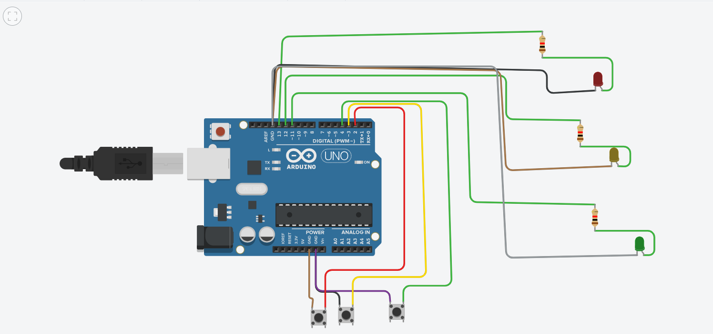

Actividad a desarrollar
Objetivo:
Encender los LED al presionar un botón, aprendiendo cómo funciona la interacción entre entrada (botón) y salida (LED).
Materiales:
- 1 Arduino Uno
- 3 LED (color a elección)
- 3 resistencia de 220Ω (para el LED)
- 3 botón (pulsador)
- 3 resistencia de 10kΩ (para el botón, pull-down)
- Cables RCA o jumpers
Conexiones:
LED:
- Ánodo (pata larga) al pin 9 del Arduino, a través de la resistencia de 220Ω.
- Cátodo (pata corta) a GND.
Botón:
- Un lado del botón al pin 2 del Arduino.
- Ese mismo lado también se conecta a GND a través de la resistencia de 10kΩ (pull-down).
- El otro lado del botón a 5V.
üëâ Repite esta conexi√≥n para los otros dos botones y LED, asignando diferentes pines digitales para cada uno (por ejemplo, pines 3 y 4 para botones; pines 10 y 11 para LEDs).
üîÅ ¬°Puedes cambiar o personalizar!
- Integra un sonido o zumbador como salida adicional si el botón se mantiene presionado más de 2 segundos.
A continuación se adjunta un ejemplo de la simulación en Tinkercad: 

üñêÔ∏è Manos a la obra, ahora empieza a construir tu propio sistema de control con botones y LEDs.
Sigue paso a paso las instrucciones, conecta correctamente cada componente y asegúrate de que el código en Arduino esté bien cargado.
üì∏ No olvides guardar evidencia de tu trabajo:
Toma una captura del circuito en Tinkercad.
Graba un pequeño video mostrando cómo funciona.